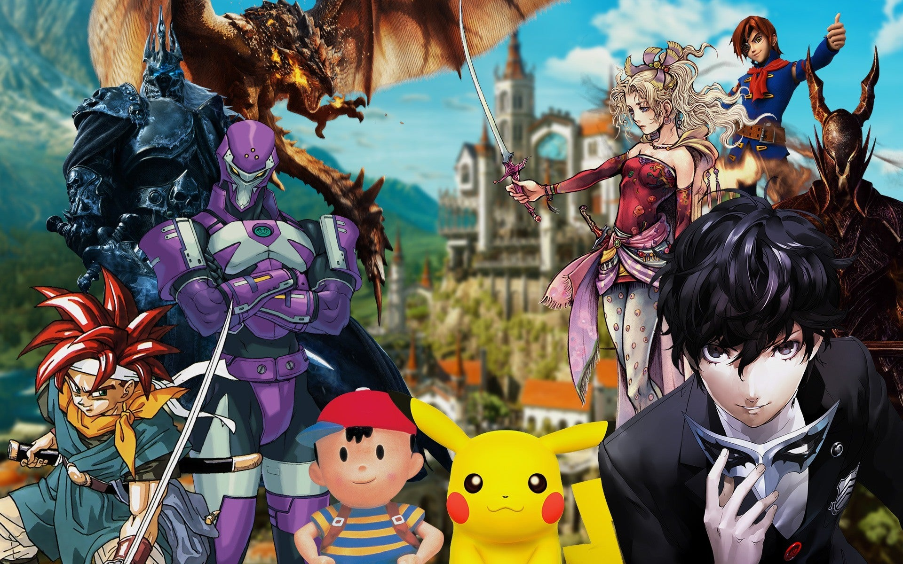
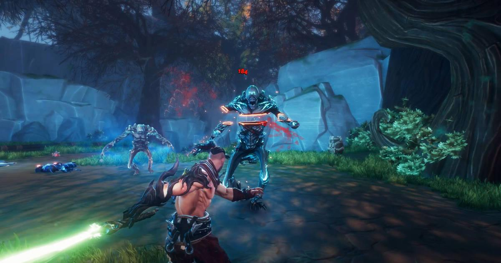
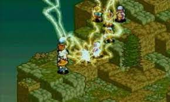
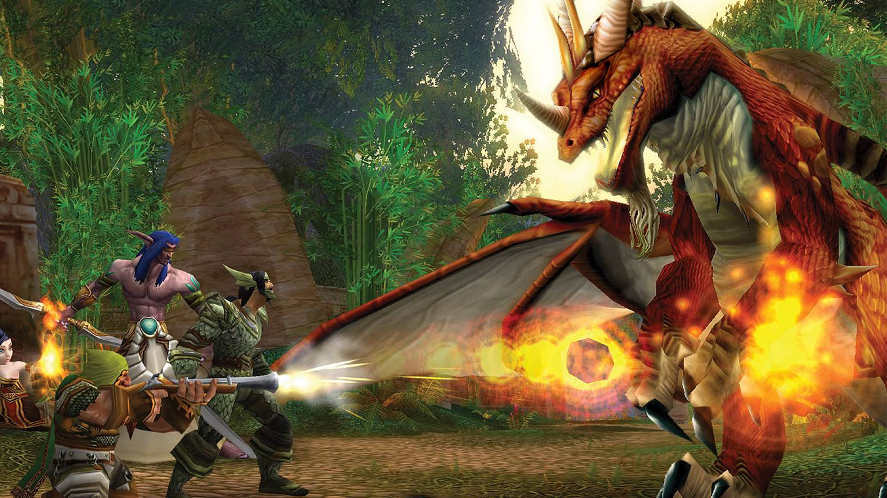

RPG
Un videojuego de rol o juego de rol por computadora/ordenador, también llamado por simplificación juego de rol (JDR), o referido con la sigla inglesa RPG (role-playing game) o CRPG (computer role-playing game), es un género de videojuegos donde el jugador controla las acciones de un personaje (o de diversos miembros de un grupo) inmerso en algún detallado mundo. La mayoría de estos videojuegos tienen sus orígenes en juegos de rol de sobremesa1 (incluyendo Dungeons & Dragons) y usan mucho de la misma terminología, escenarios y mecánicas de juego. Otra mayor similitud con los juegos de lápiz y papel incluyen una desarrollada historia y elementos narrativos, el crecimiento del personaje del jugador, complejidad, así como también rejugabilidad e inmersión. El medio electrónico remueve la necesidad de un director de juego e incrementa la velocidad de resolución de combate. Los JDR han evolucionado desde videojuegos de texto a visualmente ricas experiencias 3D.

Géneros de RPG
•RPG de acción
Habitualmente, los juegos de Acción RPG permiten controlar un único personaje en tiempo real, y suelen estar muy centrados en el combate y la acción, con la trama y la interacción de personajes mantenida al mínimo. Los juegos RPG de acción tempranos tendían a seguir la plantilla establecida en 1980 por juegos como la saga Ys, que se caracterizan por un combate hack and slash, donde las acciones del personaje son controladas directamente, usando un teclado o un controlador de juego, en lugar de usar menús. Esta plantilla fue refinada por el juego de acción aventura, The Legend of Zelda (1986), que estableció una fórmula que fue usada por muchos RPG de acción que se desarrollarían después, incluyendo innovaciones como un mundo abierto, jugabilidad no lineal y un botón de ataque que animaba el lanzamiento de un proyectil o un arco de espada.
•RPG tácticos
Videojuego de rol táctico, también conocido como TRPG (siglas en inglés de tactical role-playing game) o SRPG (siglas en inglés de strategy role playing game), es un género de videojuegos con elementos de los videojuegos de rol y de los videojuegos de estrategia. En estos videojuegos el jugador controla un grupo de personajes (pueden variar a lo largo del juego) que deben ir superando batallas que consisten en mover a los luchadores por un escenario dividido en casillas (no siempre visibles) y atacar a los contendientes del bando contrario con armas, habilidades, hechizos, etc. Los luchadores obtienen experiencia y suben de nivel, haciéndose más fuertes. Se les puede equipar con todo tipo de objetos. Las batallas siguen una historia predeterminada pero que puede seguir caminos distintos según las acciones llevadas a cabo.
•MMORPGs
Los videojuegos de rol multijugador masivos en línea o MMORPG (sigla en inglés de massively multiplayer online role-playing game), son videojuegos de rol que permiten a miles de jugadores introducirse en un mundo virtual de forma simultánea a través de internet e interactuar entre ellos. Consisten, en un primer momento, en la creación de un personaje, del que el jugador puede elegir raza, profesión, armas, etc. Una vez creado el personaje el jugador puede introducirlo en el juego e ir aumentando niveles y experiencia en peleas JcJ (jugador contra jugador) o JcE (jugador contra entorno) o llevando a cabo diversas aventuras o completando misiones.